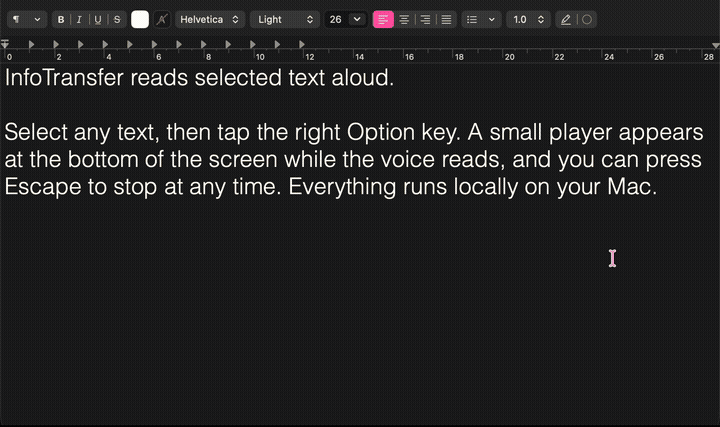
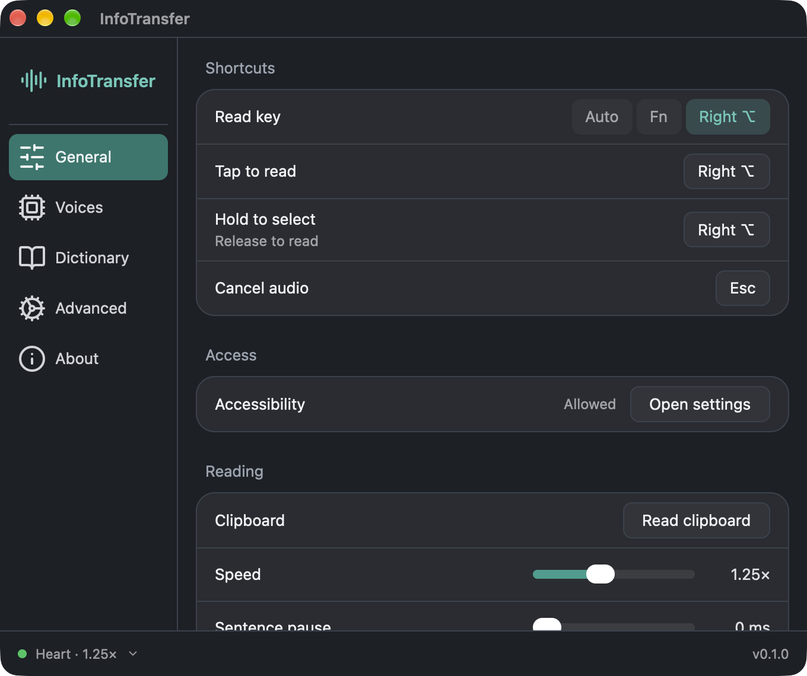
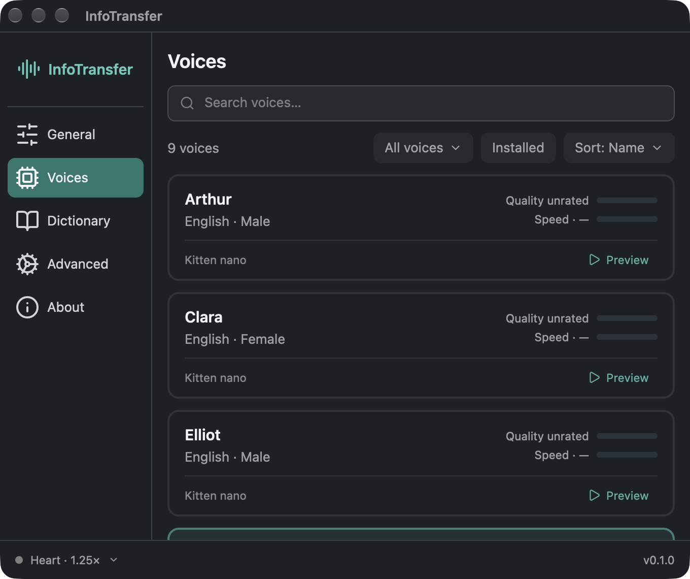
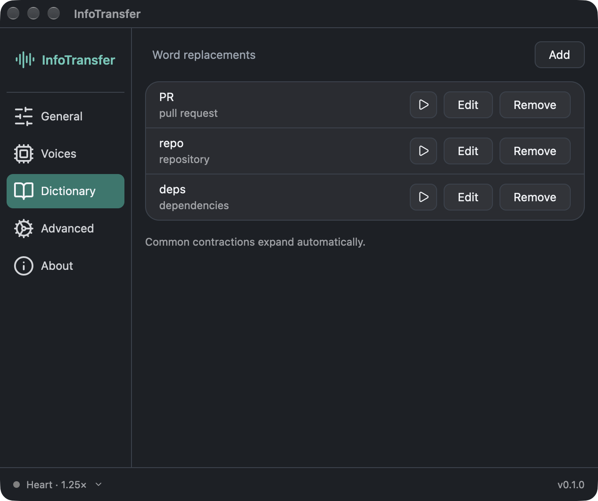
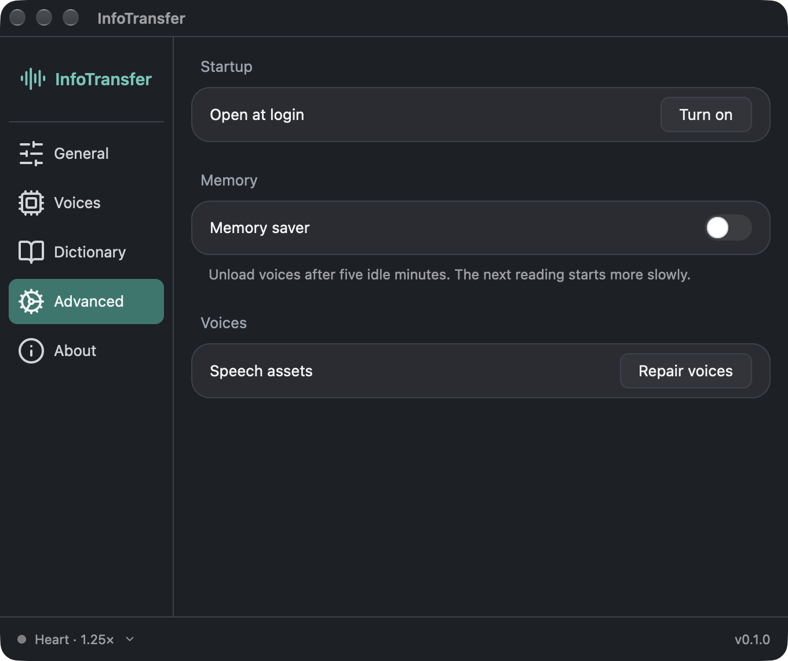

⌘
Open source
Every line is public under Apache-2.0. Read it, change it, build it yourself.
Free · Open source · Runs on your Mac
InfoTransfer reads any text on your Mac aloud the moment you tap one key. Built for people with dyslexia, low vision or reading fatigue, and anyone who understands better by listening.
One key to read. One key to stop. No menus to learn and no app to switch to.
Every line is public under Apache-2.0. Read it, change it, build it yourself.
Speech is generated on your computer. Your text never leaves it. No account, no tracking, no subscription.
Speech starts in about 0.4 seconds with the default voices, so you don't wait to start listening.
Voices download once. After that, it works on a plane, on a train, or anywhere without Wi-Fi.
Browsers, PDFs and documents: if you can select it, it can be read. Anything else can be read from the clipboard.
Teach it names and words it gets wrong. It reads them your way every time.
Numbers and units are read as words, and decorative symbols such as --- are skipped instead of read aloud.
Eight quick, light voices, plus Heart, a slower and more natural voice. Speed and pauses are adjustable.
Highlight a sentence, a paragraph or a whole page in any app, the way you normally would.
Or Fn. You can also hold the key, select with the mouse, and let go to read.
A small player at the bottom of the screen shows the voice is speaking. Keep reading along, or close your eyes.
The player disappears. Pause, resume and read clipboard are in the menu bar.

Readable labels, high contrast, and nothing you don't need.




Mac with Apple Silicon (M1 or newer), macOS 14 Sonoma or later.
The most secure option: you can read the code you run. It takes about 10 minutes and needs Xcode Command Line Tools and Rust. No Apple developer account is needed.
git clone https://github.com/sxxrfx/infotransfer.git
cd infotransfer
python3 scripts/prepare_runtime.py
python3 scripts/prepare_pronunciation.py
python3 scripts/local_signing.py --setup
python3 scripts/package_app.py --installcurl -fsSL https://github.com/sxxrfx/infotransfer/releases/latest/download/install.sh | shInfoTransfer was inspired by Handy by CJ Pais, a free, open-source, offline speech-to-text app. Handy showed that private, local voice tools can be simple and pleasant to use. InfoTransfer is the other direction, text to speech. If you need speech-to-text, try Handy.
Also built on sherpa-onnx, ONNX Runtime, Kitten TTS, Kokoro, eSpeak NG, GPUI and Lucide.